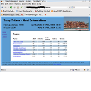
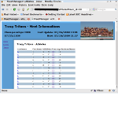
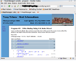
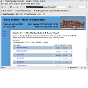

Hy-Tek Swim MeetManager - Web
This little application takes the data of the Hy-Tek Swim Meet Manager and creates a relatively light weight web site out of it.
A little back ground
I'm one of the tech-dads of our kids swim team. The team is part of the Mid-Valley Swim League, a recreational-competitive (?) group of eight swim teams for kids from under-6 all the way to 18 years.
Our bigger events can have almost 800 swimmers which usually bring their parents and siblings along. So we have many people usually camped all over the grounds of the hosting high school and we need to make sure, every athlete is at her event on time.
Yes, we post event listings and we have a PA system and also try to employ a Walkie-Talkie-channel to get the information out as good as we can. But I've seen more and more WiFi-enabled devices lately, so the idea of a meet information website was born.
Technical Requirements
Yes, I'm pretty good with computers. They do mostly what I want;-) But I'm not the only one running the meets. So any setup needed to avoid extra steps so that nothing special needed to be learned by all the different meet manager people.
Realization
After a bit of looking around, I found the the meet manager uses a Microsoft Access database and that the backup files are not much more than the complete DB with a description file. I decided not to work directly on the MDB files, because I wanted to avoid any possibility of contamination from what I'm doing. So I use the [http://sourceforge.net/projects/mdbtools mdbtools] to extract the tables and information and insert them into a MySQL DB. The target DB should not really matter, I simply had MySQL running for other stuff and it worked. There are two little scripts in the support directory of the sources which do the extraction and insertion into the target DB.
The Rails application simply reads the information and displays it nicely for the user. I selected only the info we normally need, but everything Meet Manager knows, is also available to the Rails application. So you won't find any useful migrations in the source code. The DB is completely created from the MDB original!
The application is so simple, it can run in any Rails framework. I normally run it in a Passenger setup on Ubuntu Linux. But I was also running it inside GlassFish v3 with JRuby;-)
After a couple of tries, I now run two instance of this web site. One at home on a static IP address which can be accessed from all the 3G-enabled devices, and one locally at the venue behind a OpenWRT based WiFi access point which redirects all DNS requests to my server;-) The local instance is simple to update, it is right next to the Meet Manager computer. It is also used to scp the backup file to the remote instance which checks frequently if new files were uploaded and updates the DB when needed.
Unfortunately, the Meet Manager holds on to it's MDB file. So I can't really access is directly. I'll probably try to move it to a samba share and see if Linux is as picky about accesses as Windows. I work with backups right now.
Below are some screen shots of the running application.
Maybe this helps somebody. At least I can remember what I did when the next season starts;-)
What I would like to get to, is the event and heat information from our Colorado System 5. It looks like I would have to get that out of the scoreboard information. But so far, I don't know how exactly. But there will be next season;-)
|  | The listing of the participating teams. It also shows the number of athletes and relays for each team and the team points as far as the events are currently scored. |
|  | The information for a participating athlete. It shows all the currently available information, the age, events including related relays with seed times. When available, it also include the heat/lane, final time and place/points. |
|  | Of course, there is also a list of all the events, but somehow I did not create a screen shot of that page. It basically has the number, description and two links for each event. A program link which leads to a psych sheet until the seeding is done and to the program sheet once it's available. The results link points to the result page shown below once the event was scored and to the program before that. |
|  | The event results once that event was scored. |
{kind=link}
{kind=link}
{kind=link}
{kind=link}